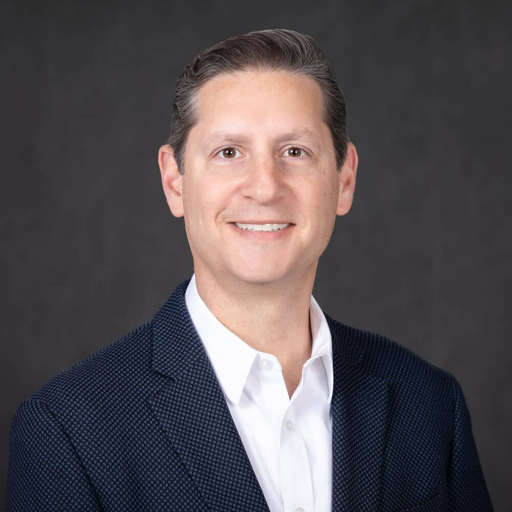
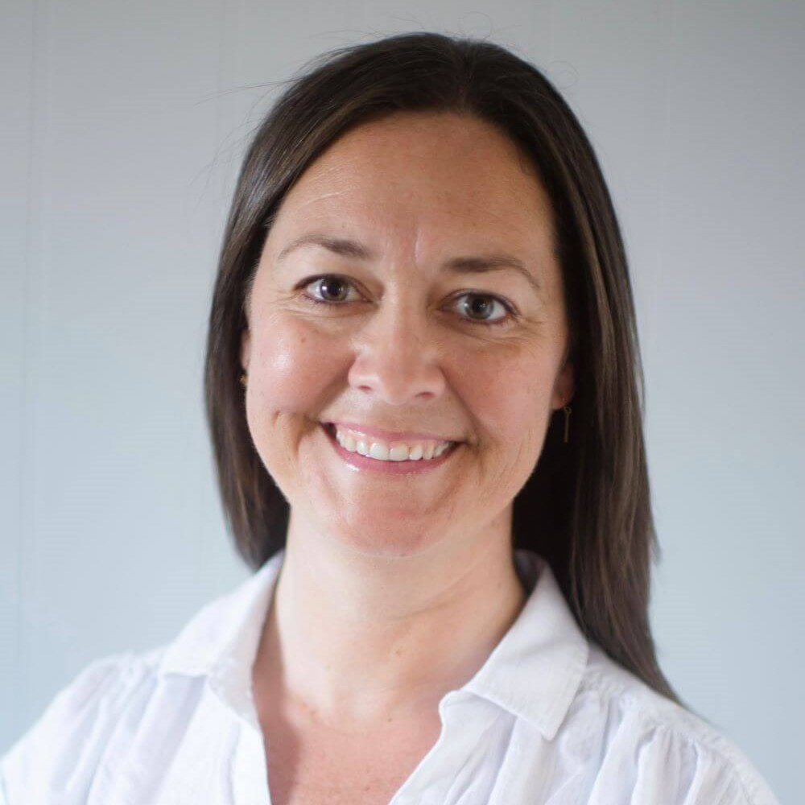
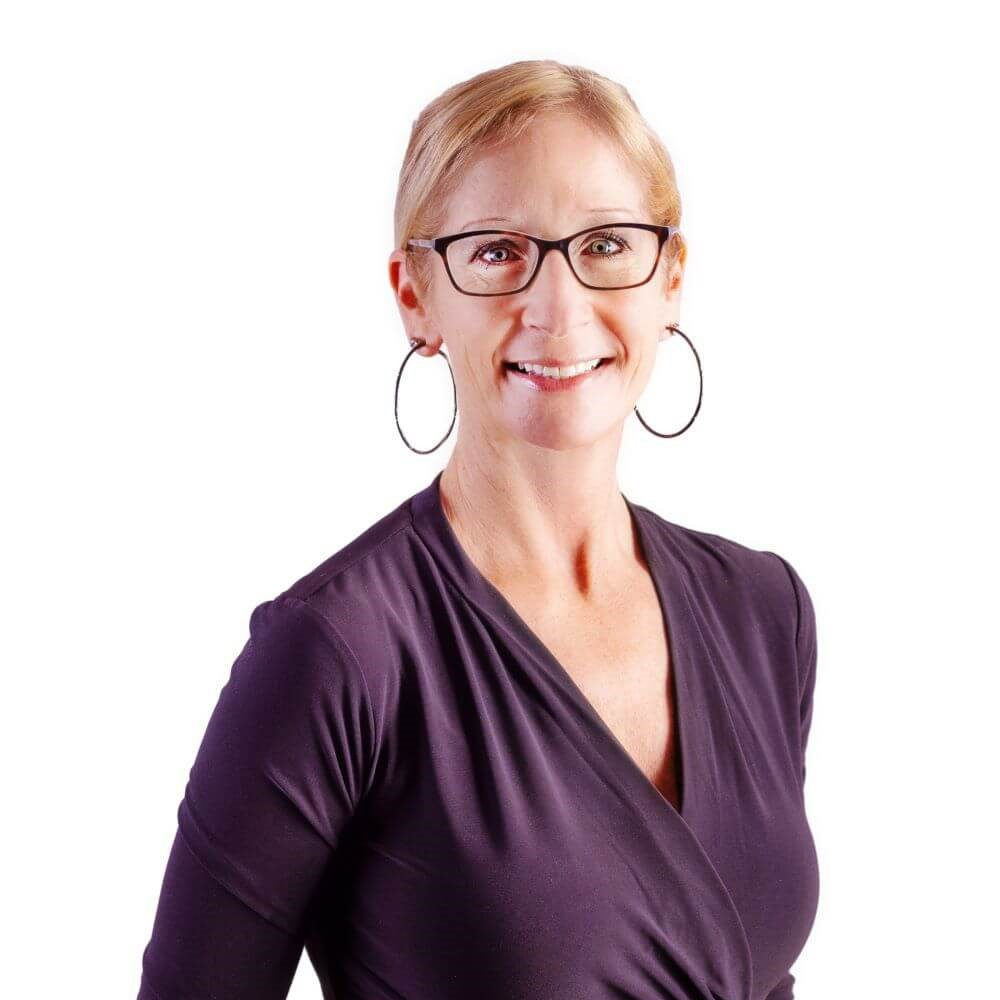
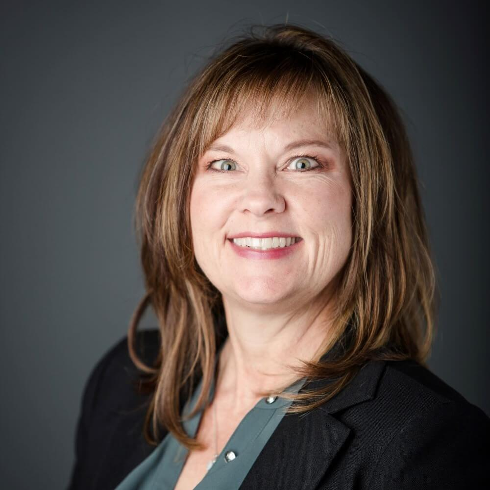
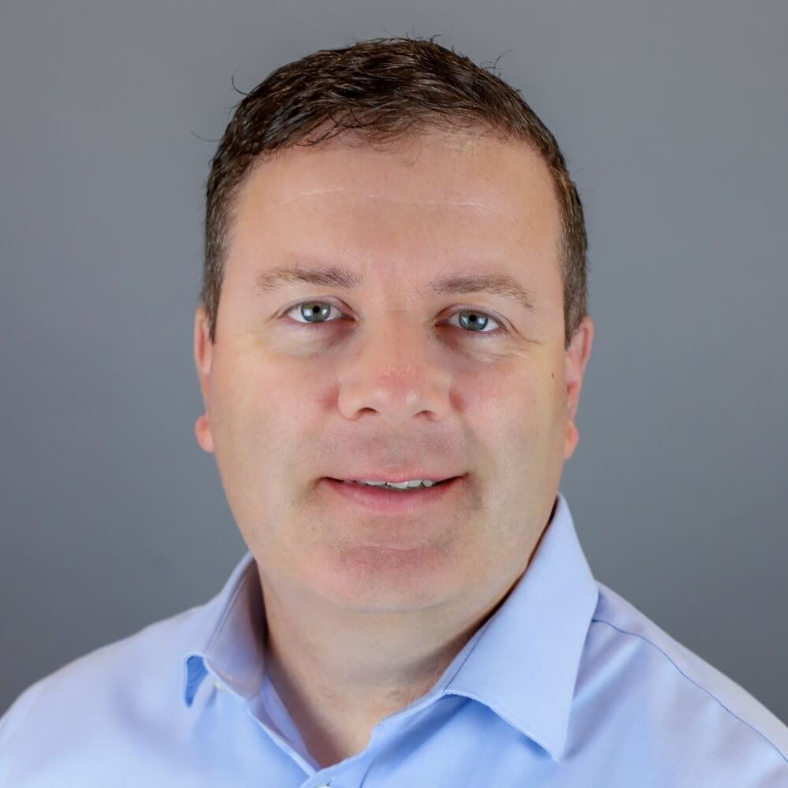
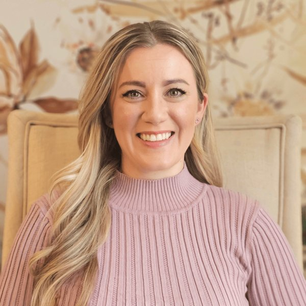

The Board of Directors evaluates blind requests from the Application Committee from individuals that have met the criteria outlined by the organization to assure a substantial impact in the community and manages all fundraising efforts. The Board is a volunteer board; no payment is received for being on the board. Board members have voting privileges during Board meetings.
The Board is made up of the following individuals committed to making impactful donations for families with children that have a parent facing a life altering illness or death. The Board meets regularly to ensure we are continually making progress in improving the quality of life for children in our community.

Mark WernsmanChairman of the BoardRead Bio
Mark, a Physical Therapist and the Vice President of Operations at Upstream Rehabilitation / SERC Physical Therapy, with over 20 years of experience in healthcare. He initially served as a clinician and has since transitioned into a leadership role overseeing a group of physical therapy clinics. Susanna, Mark's sister, was a significant presence in his life. Raised in a large family of eight siblings, they shared a close bond. Following Susanna's passing, Mark and others felt compelled to establish a nonprofit in her honor, aiming to support families facing difficult circumstances.

Kathryn GroteRead Bio
Kathryn Grote, Audiologist and Founder of KC Hearing Center LLC, earned her bachelor's and master's degrees from Missouri State University. Formerly engaged in field sales, she combined product training with business development to support audiologists. Kathryn is a cancer survivor and is passionate about making a positive impact on others. Kathryn and Susanna were actively involved in various activities and volunteer events together. Kathryn is honored to carry on Susanna’s legacy of generosity and kindness through the Infinity Susanna Smiles organization.

Karen PoletisRead Bio
Karen, a real estate agent for over 20 years working for Weichert/CJ Properties, experienced a life-changing event when she lost her youngest sister, Susanna, who left behind her four young children after being diagnosed with cancer and passing away within nine short months. Witnessing firsthand the impact on a family and their needs inspired Karen to help initiate Infinity-Susanna Smiles in honor of Susanna's legacy, aiming to make a difference for other families struggling with the loss of a parent.
JR
Jeanne Rau-FlatteryRead Bio
Jeanne Rau-Flattery, CEO of Millennium International, is not only a dedicated professional but also a wife, mother, and breast cancer "Thriver." Having personally faced the challenges of cancer, Jeanne brings a unique perspective to her role. Her goal is to support families dealing with similar situations Susanna and her family faced after her diagnosis and passing. She has held advisory positions at various Kansas City-based banks, served on the Board of Counselors for Avila University, acted as the School Advisory Board President and committee member for catholic schools. Additionally, Jeanne has served on numerous aviation industry boards. Recognized as a member of the Women Who Mean Business in Kansas City and Alumni of the Year at Avila. She also dedicates time and resources to Operation Breakthrough in KC.

Michele Spilker, CPARead Bio
Michele Spilker, CPA, is the founding partner of Spilker McKeone & Nelson PC. With over 30 years of experience in public accounting, Michele and her firm are actively engaged in numerous non-profit organizations, dedicated to assisting others in various aspects of business. Witnessing the devastation caused by cancer in Susanna’s family inspired Michele to become involved in this organization, aiming to provide support to other families facing similar situations.

Paul Torlina, Esq.Read Bio
Paul is in-house counsel for OOIDA in Grain Valley, Missouri and has been an attorney for over 20 years in Kansas City, with 15 years’ experience working with and in a Board of Trustees and not for profit setting. Paul knew Susanna from attending St. John Francis Regis grade school and O’Hara High School with Susanna and her siblings and from her family’s involvement with Our Lady of the Presentation Catholic Parish. Paul's relationships with Susanna and the Wernsman family over many years were a natural inspiration to get involved with the organization.

Maegan (Mae) SpencerRead Bio
Maegan (Mae) Spencer is a Senior Insights Manager in the Consumer Packaged Goods Industry. In addition to her professional life, she is also a mother, wife, and dedicated volunteer to many wonderful non-profits. Mae and her daughter have served their community across multiple states of residence and have a strong passion to help those in need. Mae has volunteered with several organizations with a number of years focused on Animal Welfare. She holds an advisory position at Value Unconditional, served as Director on the board for The Rescue Project as well as board for Daymon Women's network. She also acted as the fundraising and auction lead for her daughter's annual school auction. Mae is thrilled to have found a group like Infinity and to have an opportunity to support the ever evolving needs of those who are experiencing traumatic life experiences.